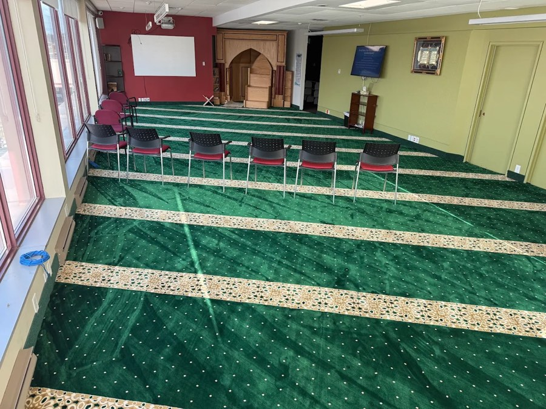

Weekly Halaqa
A weekly gathering of learning and reflection for the community.
Every Friday6:00 pm – 8:00 pm
More Than a Classroom
Umul Qura is a masjid as well as a learning centre. All five daily prayers are prayed here in congregation, Jumu'ah is held every Friday, and our doors stay open through the week for halaqas, youth nights and community programs.

The Masjid
Our prayer hall at 300 Victoria St N hosts all five daily prayers in congregation — Fajr, Dhuhr, Asr, Maghrib and Isha — every day of the week, with Jumu'ah prayer every Friday.
During Ramadhan the masjid also holds Taraweeh, community Iftaar and Qiyam nights. See what's coming up →
Prayer Times
Adhan and iqamah times for all five prayers, updated automatically through the year. Friday Jumu'ah khutbah times are listed here too and shift with the seasons — check before you travel.
Community Programs
Alongside our classes, these regular programs are open to the whole community — men, women, youth and families. Most need no registration; just come along.
A weekly gathering of learning and reflection for the community.
Every Friday6:00 pm – 8:00 pm
A monthly program tailored for muslimahs to complete the whole Qur'an in one sitting under the guidance of the mualimah.
Monthly · Sisters
A monthly get-together for the youth — discussion, games, snacks, and shared learning in a safe space where teens and university students can build identity and confidence.
Monthly · Youth
Separate halaqahs covering Tafseer and Hadith study, discussions on marriage, parenting, and personal growth, wellness workshops, and community support groups.
Regular · Brothers & Sisters
Overnight spiritual gatherings — especially in Ramadhan — with Tahajjud prayer, reflection circles, Islamic talks, brotherhood and sisterhood activities, and group suhoor.
Seasonal · All welcome
Taraweeh prayers, community Iftaar, Qur'an Khatms, youth and family activities, men's and women's halaqahs, and inspirational talks and du'a sessions.
Ramadhan · All welcome
Everyone is welcome
The masjid and our community programs are open to all — regardless of age, background, or how much you know. Call ahead or just walk in.